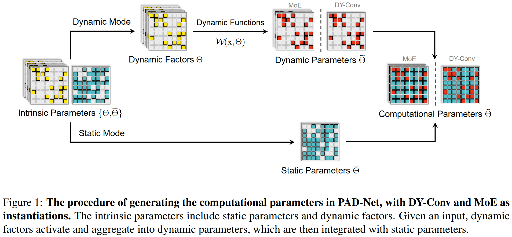

PAD-Net: An Efficient Framework for Dynamic Networks
Partially dynamic parameterization eliminates parameter redundancy and memory overhead in Dynamic Convolutions and Mixture of Experts while preserving high adaptive capacity.
1University of Maryland, College Park • 2The University of Sydney • 3JD Explore Academy • 4NTU Singapore
†Equal contribution
Core Innovations
Why dynamic networks need partial dynamic parameterization
50%–70% Parameter Sparing
Replaces redundant dynamic kernel replicas with a shared static base weight matrix, drastically slashing stored weights while preserving model capacity.
Memory Bandwidth Relief
Reduces GPU DRAM memory access bottleneck during inference by aggregating only sparse dynamic slices rather than full K-kernel parameter tensors.
Dual Paradigm Universality
Unified framework seamlessly spanning Vision (Dynamic Conv, CondConv, ODConv, DCD on ImageNet) and NLP (Mixture of Experts on GLUE & WMT'14).
Partial Dynamic Parameterization Visualizer
Simulate parameter savings, FLOPs, and representation heatmap across network architectures
M: Binary partition mask designating dynamic subspace (40%) vs shared static base (60%).
SOTA Accuracy vs. Parameter Footprint
ImageNet-1K Classification Benchmarks (Top-1 Accuracy vs. Storage)
PyTorch 1.13.1 / CUDAHow PAD-Net Works
Decomposing dynamic parameter spaces into shared bases and input-adaptive modules

Figure 1: The general framework of PAD-Net. Dynamic parameters across kernels or experts are iteratively partitioned into a shared static tensor W_static and low-overhead dynamic slices W_dyn.
Redundancy Identification
Empirical analysis reveals high cosine similarity across expert/kernel parameter slices. Retaining independent weights across all K kernels yields diminishing representational returns.
Iterative Mode Partition
A learned binary mask M separates the parameter matrix into static shared weights and dynamic adaptive weights, optimizing the trade-off via structured magnitude and gradient importance.
Zero-Latency Synthesis
Static components are executed directly or fused without dynamic routing cost, ensuring seamless inference deployment with massive memory footprint reduction.
Reproduce in 2 Minutes
Drop-in PyTorch module or fine-tune with HuggingFace Transformers
Citation
If you find PAD-Net useful in your research, please cite our ACL 2023 paper:
@inproceedings{he-etal-2023-pad,
title = "{PAD}-Net: An Efficient Framework for Dynamic Networks",
author = "He, Shwai and
Ding, Liang and
Dong, Daize and
Liu, Boan and
Yu, Fuqiang and
Tao, Dacheng",
booktitle = "Proceedings of the 61st Annual Meeting of the Association for Computational Linguistics (Volume 1: Long Papers)",
month = jul,
year = "2023",
address = "Toronto, Canada",
publisher = "Association for Computational Linguistics",
url = "https://aclanthology.org/2023.acl-long.875/",
doi = "10.18653/v1/2023.acl-long.875",
pages = "14354--14366"
}